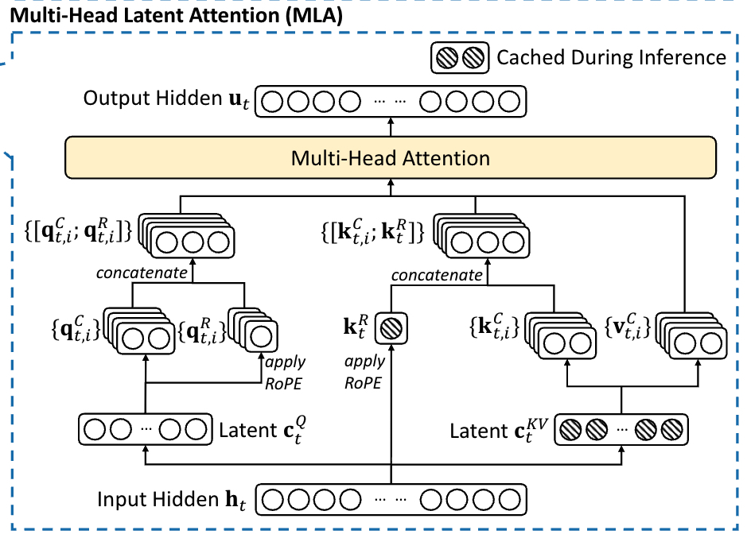
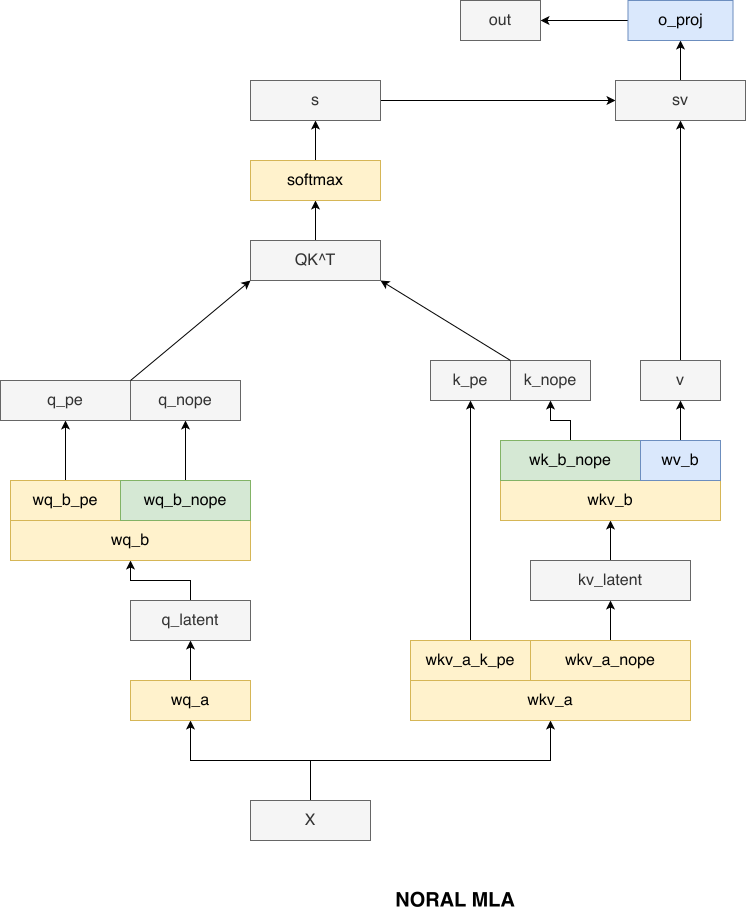
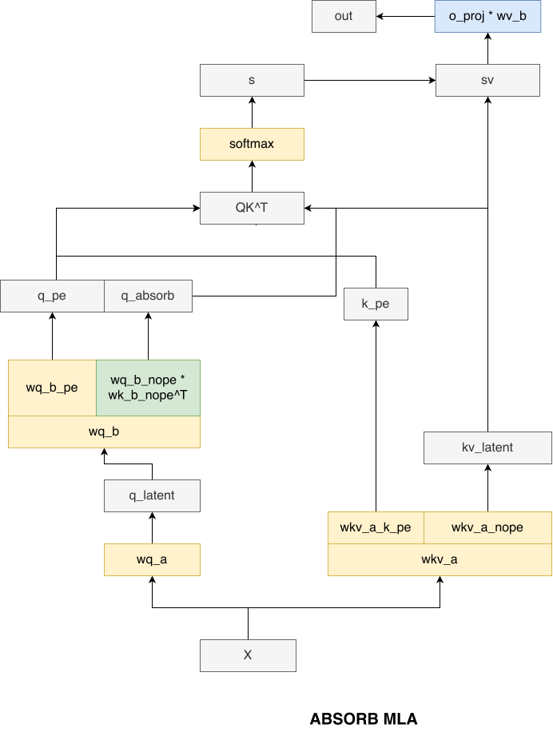

目的
MLA 是 deepseek 采用的 MHA 的优化方案，主要为了解决以下的痛点问题：
MHA 需要保存所有 head 的 kv cache，这是一笔很大的显存开销。后来 MQA、GQA 对此问题有所优化，在 attention 阶段我们之保存部分 head 的 kv cache，这样显存占用不就直接缩小 N 倍了么？
但是凡事有利必有弊，你减少了 kv head 数量，那么效果肯定也要有所打折扣。那么有没有什么方式，既可以实现尽量少保存 kv cache ，又可以尽量恢复 MHA 的效果呢。
Deepseek 团队从 lora 的设计思想中获得启发，设计了 MLA 这种方式。
压缩
MLA 的核心在于压缩，在传统的 MHA/MQA/GQA 中，我们直接通过 W_{Q}、W_{K} 和 W_{V} 矩阵来得到 Q、K、V，假设输入的表示为 X：
Q = X W_{Q}
K = X W_{K}
V = X W_{V}
MLA 在这里增加了一个中间步骤：
Q = X W_{qa} W_{qb}
[K, V] = X W_{kva} W_{kvb}
当然，压缩过后得到的 tensor 一般我们称作 latent，所以上述公式可以表述为：
c_{q} = X W_{qa} \quad Q = c_{q} W_{qb}
c_{KV} = X W_{kva} \quad [K, V] = c_{KV} W_{kvb}
当然这里是简化过的公式，实际考虑到 rope 的处理，完整版的公式要复杂不少，这里主要说明思想，细节后面再说。
Normal vs Absorb
可以看到，W_{Q} 被拆分成了 W_{qa} 和 W_{qb} 这两个步骤，其中 W_{qa} 是压缩过程，W_{qb} 是反压缩过程。经过这两个步骤，其效果和 MHA 是一致的，KV 的 head 数量没有减少。
\begin{aligned} \text{MHA 路径} &= \text{softmax}\left( \frac{QK^{T}}{\sqrt{k}} \right) V \\ &= \text{softmax}\left( \frac{c_{q} W_{qb} (c_{KV} W_{kb})^T}{\sqrt{k}} \right) (c_{KV} W_{vb}) \end{aligned}
那你可能要问了，经过这一个步骤的目的又是什么呢？其实在 prefill 阶段 MLA 就是 “多此一举的 MHA”，MLA 在 prefill 的模式也叫做 Normal 模式，Normal 模式即使用 MHA。
在 decode 阶段可以才是 MLA 发挥威力的地方：
- 在正常的 MHA/MQA/GQA 中的 decode 阶段，我们保存的是若干个头的 kv cache，但是在 MLA 中的 decode，我们只需要保存 latent c_{KV} 即可
- 在 MLA 的 decode 阶段，我们可以通过一个巧妙的数学变换来做 MQA，但是其效果上相当于 MHA
\begin{aligned} \text{MQA 路径} &= \text{softmax}\left( \frac{QK^{T}}{\sqrt{k}} \right) V \\ &= \text{softmax}\left( \frac{c_{q} W_{qb} (c_{KV} W_{kb})^T}{\sqrt{k}} \right) c_{KV} W_{vb} \\ &= (\text{softmax}\left( \frac{(c_{q} W_{qb} W_{kb}^T) c_{KV}^T}{\sqrt{k}} \right) c_{KV}) W_{vb} \end{aligned}
可以看到，其中 W_{kb} 被 absorb 到 W_{qb} 中，实际上在做 decode 阶段的 attention 时 K 就等同于 c_{KV}，只有一个头，所以就相当于 MQA。
当然，上面的公式具备高度概括性，实际情况却要复杂不少，这种复杂性主要源 deepseek 在使用 MLA 时关于 rope 的处理。
QK Rope
首先给出 deepseek v2 论文中关于 MLA 的原版流程图：

可以看到：Q 的 rope 部分通过 c_{Q} 乘上 W_{UQ} 得到，每个 head 使用不同的 rope，但是 K 的所有 head 公用一个 rope，K 的 rope 直接由 input hidden 乘上 W_{KR} 得到。
以上过程的完整数学公式表述如下：
c_{Q} = X W_{DQ} Q_{nope} = c_{Q} W_{UQ} Q_{rope} = \text{RoPE}(c_{Q} W_{QR}) c_{KV} = X W_{DKV} K_{nope} = \text{RoPE}(c_{KV} W_{UK}) V = c_{KV} W_{UV} K_{rope} = \text{RoPE}(X W_{KR}) Q = \text{Concat}(Q_{nope}, Q_{rope}) K = \text{Concat}(K_{nope}, K_{rope}) \text{MHA} = \text{softmax}(\frac{QK^T}{\sqrt{k}})V
对应的流程图如下：

在推理的 decode 阶段，实际上使用的是 MQA，这里也给出 MQA 的数学流程：
c_{Q} = X W_{DQ} Q_{nope} = c_{Q} W_{UQ} Q_{rope} = \text{RoPE}(c_{Q} W_{QR}) Q = \text{Concat}(Q_{nope} W_{UK}^{T}, Q_{rope}) c_{KV} = X W_{DKV} K_{rope} = \text{RoPE}(X W_{KR}) K = \text{Concat}(c_{KV}, K_{rope}) V = c_{KV} W_{UV} \text{MQA} = \text{softmax}(\frac{QK^T}{\sqrt{k}})V
对应的流程图如下：

计算量分析
假设用 T 表示 q_len，用 S 表示 kv_len：
\begin{aligned} &\text{MQA 和 MHA 共通的部分} \\ &\quad \text{flops\_q\_a\_and\_kv\_a}: \quad \text{T} \times 7168 \times (1536 + 512 + 64) \\ &\quad \text{flops\_qb}: \quad \text{T} \times 1536 \times 128 \times 192 \\ &\quad \text{flops\_oproj}: \quad \text{T} \times 128 \times 128 \times 7168 \\ \\ &\text{MHA 路径} \\ &\quad \text{flops\_kb}: \quad \text{S} \times 512 \times 128 \times 128 \\ &\quad \text{flops\_vb}: \quad \text{S} \times 512 \times 128 \times 128 \\ &\quad \text{flops\_mha}: \quad 128 \times (\text{T} \times \text{S} \times 192 + \text{T} \times \text{S} \times 128) \\ \\ &\text{MQA 路径} \\ &\quad \text{flops\_absorb\_kb}: \quad \text{T} \times 128 \times 128 \times 512 \\ &\quad \text{flops\_absorb\_vb}: \quad \text{T} \times 128 \times 512 \times 128 \\ &\quad \text{flops\_mqa}: \quad 128 \times (\text{T} \times \text{S} \times 576 + \text{T} \times \text{S} \times 512) \end{aligned}
再给出定性的差别：
- 在 prefill 阶段，如果用 MQA，除了 attention 的计算量变大 3 倍，其他无差别，因为 prefill 阶段 q_len == kv_len
- 在 decode 阶段，使用 MQA，attention 计算量虽然变大了，但是由于 decode 阶段 kv_len << q_len，所以 kv_b 的计算量被省下来了
很多人常常被理论（数学层面实现）和代码实现给绕晕，这主要是因为两方面：
- 代码会对流程进行优化
- 代码符号和数学符号的差异和语义差别
首先说第一点，比如对于以上的流程，在实际代码执行过程中，我们完全可以将以下几个 gemm 合并为一个：
[c_{Q}, c_{KV}, K_{nope}] = X [W_{DQ}, W_{DKV}, W_{KR}]
也就是说，首先将这个几个 gemm 的权重 W_{DQ}, W_{DKV}, W_{KR} 合并为一个，然后做完 gemm 之后我们再拆分所需要的不同目标 tensor。
符号声明
shape 说明
- X:
[bs, q_len, hidden_size]，即[bs, q_len, 7168] - c_{Q}:
[bs, kv_len, q_lora_rank]，即[bs, kv_len, 1536] - c_{KV}:
[bs, kv_len, kv_lora_rank]，即[bs, kv_len, 512] - W_{DQ}:
[hidden_size, q_lora_rank]，即[7168, 1536] - W_{UQ}:
[q_lora_rank, q_heads, qk_nope_head_dim]，即[1536, 128, 128] - W_{QR}:
[q_lora_rank, q_heads, qk_rope_head_dim]，即[1536, 128, 64] - W_{DKV}:
[hidden_size, kv_lora_rank]，即[7168, 512] - W_{KR}:
[hidden_size, qk_rope_head_dim]，即[7168, 64] - W_{UK}:
[kv_lora_rank, kv_heads, qk_nope_head_dim]，即[512, 128, 128] - W_{UV}:
[kv_lora_rank, kv_heads, v_head_dim]，即[512, 128, 128]